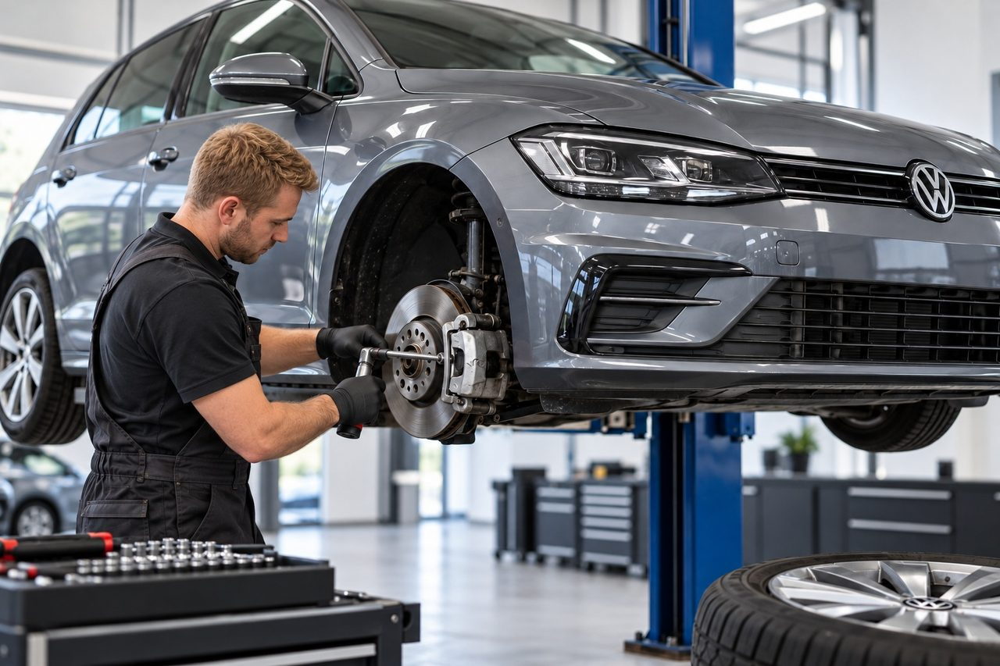

Dịch vụ Volkswagen
Chúng tôi chuyên chẩn đoán, bảo dưỡng và sửa chữa xe Volkswagen được sản xuất từ 2010 trở đi. Chúng tôi sử dụng hệ thống chẩn đoán ODIS của nhà sản xuất, thiết bị đo chuyên nghiệp và quy trình của nhà sản xuất. Phạm vi công việc phụ thuộc vào mẫu xe, phiên bản động cơ, trang bị và tình trạng xe.
Chúng tôi lập kế hoạch bảo dưỡng định kỳ theo lịch bảo dưỡng của từng xe. Khi phát hiện lỗi, chúng tôi xác định hướng xử lý tiếp theo dựa trên kết quả chẩn đoán và kiểm tra xe; phạm vi sửa chữa cùng giá ước tính được thống nhất với khách hàng trước khi bắt đầu công việc.
J&S SERVIS đã hoạt động tại Statenice – Černý Vůl kể từ 1994. Là một xưởng độc lập, chúng tôi tập trung vào công nghệ xe của Volkswagen Group.
- Chuyên về xe Volkswagen
- Chẩn đoán ODIS của nhà sản xuất
- Kinh nghiệm bảo dưỡng và sửa chữa kể từ 1994

ĐƠN GIÁ TIỀN CÔNG
| Hạng mục | Đơn giá mỗi giờ, bao gồm VAT |
|---|---|
| Đơn giá cơ bản | từ 1 100 Kč |
| Xe hybrid, plug-in hybrid và xe điện của Volkswagen, Audi, Škoda, SEAT và CUPRA, bao gồm cả bảo dưỡng thông thường | 2 000 Kč |
Phụ tùng, chất lỏng vận hành và các vật liệu khác được tính phí riêng. Tổng giá phụ thuộc vào mức độ công việc được yêu cầu; chúng tôi thống nhất quy trình và giá cả dự kiến với khách hàng trước khi bắt đầu sửa chữa. Các dịch vụ có bảng giá riêng, chẳng hạn chẩn đoán ODIS cơ bản hoặc căn chỉnh bánh xe, được tính phí theo báo giá tương ứng. Trước khi bắt đầu công việc, chúng tôi thông báo cho khách hàng về chi phí dự kiến.
Chẩn đoán và sửa chữa động cơ
Chúng tôi chẩn đoán và sửa chữa động cơ xăng TSI, TFSI và động cơ diesel TDI. Công việc bao gồm hệ thống dẫn động cam, tăng áp, phun nhiên liệu, làm mát động cơ và hệ thống khí thải, gồm DPF, EGR và SCR/AdBlue.
Đối với động cơ TSI và TDI, quy trình bảo dưỡng khác nhau theo kết cấu và mã động cơ. Khi kiểm tra hệ thống dẫn động cam, cần phân biệt dẫn động bằng dây đai và bằng xích; không thể xác định chu kỳ và phạm vi thay thế chỉ dựa vào tên mẫu xe. Dầu và các chất lỏng vận hành khác phải đáp ứng quy cách được quy định cho động cơ cụ thể.
Khi động cơ chạy không đều hoặc bị giảm công suất, việc so sánh các giá trị yêu cầu và thực tế của hệ thống tăng áp, phun nhiên liệu và nhiệt độ vận hành giúp phân biệt nguyên nhân với hậu quả của lỗi. Đối với TDI, tình trạng của DPF cũng được đánh giá liên quan đến chênh lệch áp suất, nhiệt độ và điều kiện tái sinh. Việc báo cáo đơn thuần về lỗi bộ lọc không nhất thiết có nghĩa là nó cần phải được thay thế.
Hộp số tự động và hệ dẫn động bốn bánh
Chúng tôi cung cấp chẩn đoán, bảo dưỡng và sửa chữa hộp số DSG cùng các hộp số tự động khác theo kết cấu của chúng. Chúng tôi thay dầu hộp số và lọc dầu, chẩn đoán cụm cơ điện tử mechatronics và bảo dưỡng hệ dẫn động bốn bánh 4MOTION.
Các hộp số DSG khác nhau, trong đó có kết cấu ly hợp và mạch dầu. Vì vậy, quy cách dầu, quy trình kiểm tra mức dầu và chu kỳ bảo dưỡng được xác định theo loại hộp số cụ thể, không chỉ theo số cấp số. Nếu xe bị giật, chậm truyền lực khi khởi hành hoặc chuyển số bất thường, cần đánh giá mối liên hệ giữa hoạt động của động cơ, ly hợp và cụm cơ điện tử mechatronics.
Tên 4MOTION cũng bao gồm các thiết kế khác nhau. Việc bảo dưỡng ly hợp dẫn động bốn bánh, hộp phân phối và bộ vi sai phụ thuộc vào cấu hình cụ thể của xe; không được dùng lẫn các loại dầu nạp cho từng cụm.
Chẩn đoán ODIS của nhà sản xuất
Chúng tôi sử dụng hệ thống chẩn đoán ODIS, thiết bị đo chuyên nghiệp và trang thiết bị dịch vụ chuyên dụng. Chúng tôi tìm lỗi, đánh giá các giá trị đo được, thử chức năng, thực hiện cài đặt cơ bản và điều chỉnh thích nghi theo khả năng kỹ thuật của xe.
ODIS (Offboard Diagnostic Information System) là hệ thống chẩn đoán dành cho xe của tập đoàn Volkswagen. Bộ nhớ lỗi cung cấp thông tin ban đầu, nhưng bản thân mã lỗi không xác định phụ tùng cần thay. Hoàn cảnh xuất hiện lỗi và việc đối chiếu các giá trị đo với biểu hiện thực tế của xe cũng quan trọng.
Vì vậy, quy trình chẩn đoán kết hợp dữ liệu từ các bộ điều khiển với phép đo và kiểm tra cơ khí. Sau khi loại bỏ nguyên nhân, phải kiểm chứng kết quả sửa chữa. Sự cần thiết của cài đặt cơ bản hoặc điều chỉnh thích nghi phụ thuộc vào công việc đã thực hiện và quy trình của xe cụ thể.
Hệ thống điện tử và điện
Các bộ điều khiển động cơ, hộp số, phanh và hệ thống tiện nghi trao đổi thông tin qua các đường truyền dữ liệu. Vì vậy, nhiều thông báo lỗi có thể có chung một nguyên nhân, chẳng hạn trục trặc nguồn cấp điện, nối mát hoặc dây dẫn. Kiểm tra ắc quy, hệ thống sạc và các kết nối điện giúp tránh thay thế không cần thiết những bộ phận còn hoạt động tốt.
Dịch vụ và bảo dưỡng xe
Chúng tôi thực hiện kiểm tra bảo dưỡng định kỳ, thay các chất lỏng vận hành và bộ lọc, sửa chữa hệ thống phanh, gầm xe, hệ thống lái, điện tử và điều hòa.
Chúng tôi cũng bảo dưỡng một số mẫu Volkswagen hybrid và thuần điện, bao gồm dòng ID., trong phạm vi bảo dưỡng thông thường và chẩn đoán. Sửa chữa pin cao áp và can thiệp vào các bộ phận cao áp không thuộc phạm vi dịch vụ này.
Phạm vi dịch vụ cho xe hybrid và xe điện
Chúng tôi làm việc theo quy trình dịch vụ liên quan của nhà sản xuất và đối với từng mẫu xe, biến thể động cơ và trang bị cụ thể của xe.
Các mẫu xe được bảo dưỡng - Volkswagen
Khả năng tiếp nhận xe và phạm vi công việc cụ thể được kiểm tra theo VIN. Việc liệt kê một dòng xe không có nghĩa là mọi công việc đều có sẵn cho tất cả phiên bản.
- up!
- Fox
- Polo (bao gồm CrossPolo và GTI)
- Golf (bao gồm Variant, GTI, GTD và R)
- Scirocco
- Taigo
- Passat (bao gồm Variant và Alltrack)
- Arteon
- Phaeton
- T-Cross
- T-Roc (bao gồm Cabriolet)
- Tiguan (bao gồm Allspace)
- Tayron
- Touareg
- ID. Polo
- ID. Cross
- ID.3
- ID.4
- ID.5
- ID.7 (bao gồm Tourer)
- Touran
- Sharan
- Jetta
- Beetle (bao gồm Cabriolet)
- New Beetle (bao gồm Cabriolet)
- Eos
- CC (Passat CC)
- Golf Plus
- Golf Sportsvan
- Golf Cabriolet
- ID.3 Neo
Các xe nhập khẩu riêng: ID.6 CROZZ và ID.6 X (nhập khẩu riêng lẻ từ Trung Quốc) không dành cho thị trường châu Âu; cần xác minh trước khả năng tiếp nhận xe và thực hiện từng hạng mục dịch vụ. Danh sách tổng quan gồm các dòng xe chính thức dành cho thị trường châu Âu, được sản xuất ít nhất trong một phần giai đoạn từ 2010, kể cả các mẫu đã ngừng sản xuất. Với mẫu mới và xe điện, chúng tôi kiểm tra riêng theo VIN về khả năng cung cấp chức năng chẩn đoán, quy trình bảo dưỡng và phụ tùng. Phạm vi dịch vụ phụ thuộc vào từng xe và khả năng kỹ thuật của xưởng.
Khi đặt lịch, vui lòng chuẩn bị VIN, số km hiện tại và mô tả ngắn gọn công việc cần làm hoặc biểu hiện lỗi.
Volkswagen của bạn có cần bảo dưỡng không? Liên hệ với chúng tôi để thảo luận về các bước tiếp theo.